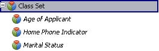
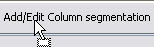
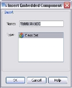
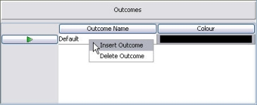

Matrices
A Matrix is a way of segmenting records. A matrix compares the classing intervals of two characteristics and forms cells from the combinations. Outcomes are assigned to the cells. Where one or more cells are assigned the same outcome this represents a grouping of records and a level of segmentation.
{kind=link}
The classing intervals of a Matrix are defined in Class Sets. It is the classing intervals of the Class Set that form the structure of the column (X axis) and row (Y axis) of the Matrix. Class Sets can be referenced from within the Matrix (this means that they can be changed outside of the Matrix and may be shared by other components). Alternatively, a Class Set can be created from within the Matrix editor and will be embedded into the Matrix (this means the Class Set details are only used by this Matrix and can only be edited from within the Matrix).
There are two types of Class Sets that can be created and used within a Matrix:
- a Logical Data Source Class Set
- a Logical Data Model Class Set
|
A Matrix that uses at least one Logical Data Model Class Set is only supported in the following components:
|
When a Matrix is implemented using just Logical Data Source Class Sets the outcomes can:
- produce segmentation levels in a Segmentation Tree
- be assigned a score in a Scorecard
- be used as part of the script in the following components:
- Boolean Expression
- Derived Data Script
- Treatment Table Design
- User Defined Functions
- Policy Rule
A Matrix consists of a grid whose cells are made up from the comparison of the classing intervals of two characteristics and outcomes that are assigned to the cells. Once you have created a Matrix you will need to define it.
A Matrix can be created from the Explorer window.
| You will only be able to add a component type that has been allowed for the selected folder. If it is not allowed it will not be listed and therefore cannot be created. |
To create a Matrix
- From the Explorer, right click at the required folder level and select Add a component.
- Select Matrix from the list of available components.
- In the Create a Component screen, enter the name of the Matrix.
- Select the Open new components in component editor check box.
- Click OK.
The Matrix Editor will open allowing you to edit a matrix
The Matrix name will be listed in the Explorer under the selected folder level. The component is identified by the icon.
{kind=link}
If you do not wish the editor to open, keep the check box de-selected. From the Explorer window, right click on the Matrix and select Open.
| A Matrix can be created as an embedded component from within other components, for example Scorecards or Segmentation trees. |
To edit a Matrix
You will need to add Class Set segmentation to both the column and the row areas of the Matrix. The Class Set intervals contained in these Class Sets will then be used to form the grid.
There is no practical limit on the grid size or the number of intervals assigned to either the column or row.
A Class Set that is referenced from within the Matrix, means that it can be changed outside of the Matrix and may be shared by other components.
To add a reference Class Set to a Matrix
- With the Matrix editor open, click on the Resources window. The valid component types will be listed.
- Expand the Class Set list to display all the available Class Sets. For example:

{kind=link}
- Drag and drop the required class set onto the Add/Edit Column segmentation bar:

{kind=link}
- The Class Set will be assigned to the column and the name of the Class set will be displayed on the bar. For example:
{kind=link}
- Repeat steps 3 to 4 to assign a Class Set to the Add/Edit Row segmentation bar.
You can now go on to assign outcomes.
or
You will need to add the Class Set segmentation to both the column and the row areas of the matrix. The Class Set intervals contained in these Class Sets will then be used to form the grid. There is no practical limit on the grid size or the number of intervals assigned to either the column or row.
A Class Set that is created from within the Matrix editor will be embedded into the matrix, this means that the Class Set details are only used by this Matrix and can only be edited from within the Matrix.
To insert an embedded Class Set into a Matrix
- On the Add/Edit Column segmentation bar, right click and select Add Segmentation; or from the Palette drag and drop the Embedded Class Set onto the Add/Edit Column segmentation bar.
The Insert Embedded Component window is displayed.
{kind=link}
- Over type Matrix Axis(X) with a unique name and then select Class Set.
- Select OK to confirm the selection and close the dialog.
The system will open the embedded Class Set editor.
- You now need to edit the embedded Class Set. See the topic Edit a Class Set for details on how to do this.
- Once you have finished defining your Class Set, select the Close Internal Editor button.
The Class set will be assigned to the column and the name of the Class set will be displayed on the bar.
- Repeat steps 1 to 5 to assign a Class Set to the Add/Edit Row segmentation bar.
A Class Set will now be assigned to both the row and column.
Once you have created an embedded Class Set for your Matrix you may wish to amend it.
To edit an embedded Class Set
- Right click on the Add/Edit Column segmentation bar to which you have inserted an embedded Class Set and select Open Segmentation.
The embedded Class Set editor will open.
- Amend the Class Set as required. See the topic Edit a Class Set for details on how to do this.
- Once you have finished amending your Class Set, select Close Internal Editor .
- Repeat steps 1 to 3 to amend an embedded Class Set that has been assigned to the Add/Edit Row segmentation bar.
The amended Class Sets will be applied to your Matrix.
Outcomes are assigned to the cells of a Matrix. Where one or more cells are assigned the same outcome this represents a grouping of records and a level of segmentation.
To create an outcome for a Matrix
- With the Matrix editor open, right click in the Outcomes area and select Insert Outcomes.

An outcome will be created with a new colour and a default name.
{kind=link}
- Replace the default name supplied with a new unique name for the outcome.
- Double click on the outcome colour to change it (if desired) and select a new colour from the Pick a Colour screen.
- Repeat for all the outcomes required.
You will now have the outcomes you require for the Matrix.
In order for a Matrix outcome to produce a level of segmentation, it must be assigned to one or more cells. Cells assigned the same outcome represent a grouping of the records that fall into those cells.
The user can determine how the outcomes are displayed in the cells.
|
|
Colours - will display just the colour of the outcome assigned to the cell. Names - will display only the names of the outcome assigned to the cell. Mixed - will display both the colour of the cell and the outcome name assigned to it. |
To assign an outcome to one or more cells
- With the Matrix editor open, and the Paint icon selected, in the Outcome area click on the outcome you wish to assign.
| You must already have created the outcome(s) and the cells to which they are to be assigned. |
- In the main Matrix editor. click on the cell you wish to assign the outcome to. The same outcome will be assigned to any cells you select until you select another outcome in the Outcome area.
- You can assign an outcome to a collection of adjacent cells. Click on the first cell then drag the mouse to the last cell in the required selection. Cells will be assigned the outcome as you drag the mouse.
- Repeat as necessary to assign an outcome to all of the cells.
{kind=link}
Each cell should now have an outcome assigned.
The order of the columns and rows in a Matrix are defined by the order of the class intervals contained in the Class Set. These can only be changed from inside the Class Set editor.
If the Class Set used to define the Matrix is a referenced Class Set, you will have to edit the Class Set from outside the Matrix.
| Changing the order of the intervals in a Class Set used in your Matrix will change the order of the intervals where ever it is used in your system. |
To change the order of the columns/rows
- Either Edit an embedded Class Set and Move an interval or Edit a Class Set and Move an interval.
The amended order will be displayed in the Matrix.
The Matrix will now be available for use within other components.
|
A Matrix that uses at least one Logical Data Model Class Set is only supported in the following components:
|
Once the user has successfully created a Matrix, the user will be able to test it using the Batch or Interactive Tester.
The user can test a Matrix either by manually typing in data for the input characteristics referenced in the Matrix or by performing a test against a known data source.
To perform an interactive test
To test a Matrix manually by entering data into the relevant fields for the input characteristics, use the Interactive Tester.
To perform a batch test
To test a Matrix using data from a .csv file, from the Solution Explorer window, right click on the component and select New Test Project to use the Batch Tester.